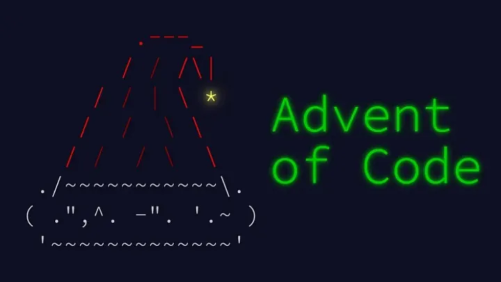
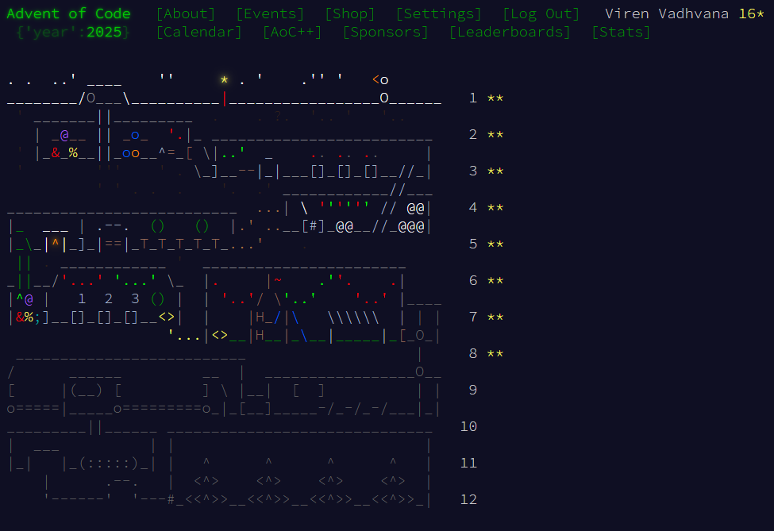
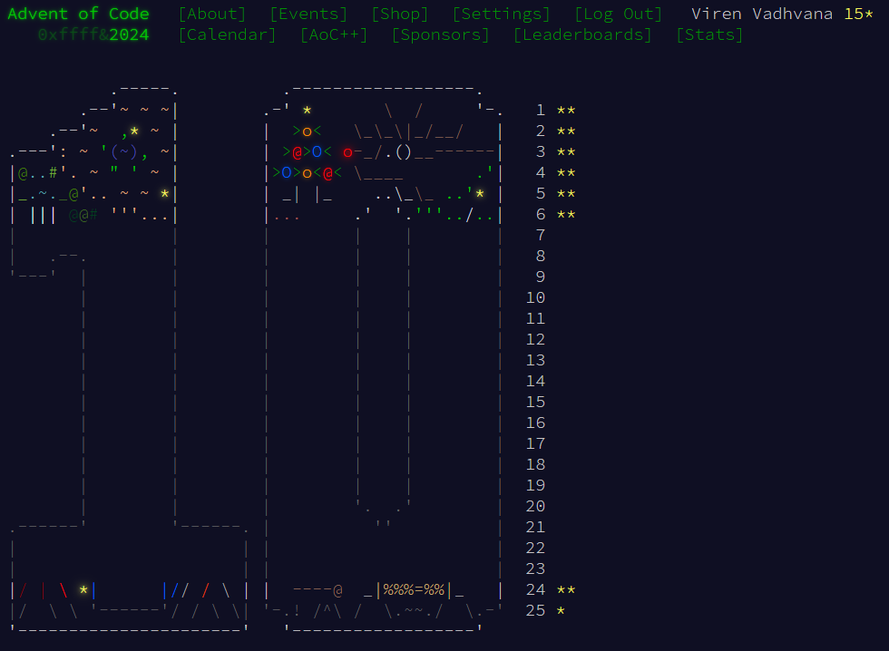

Advent of Code
Description
Advent of Code is an Advent calendar of small programming puzzles that can be solved in any programming language. People use them as interview prep, company training, university coursework, practice problems, a speed contest, or to challenge each other. Generally, the difficulty of the puzzles increases each day.
Standings
Unfortunately, I've been far too busy with work/coursework to try to compete seriously or see the challenge through to the completion. However, I aim to at least top my private leaderboards and have occasionally gone back to complete the most difficult puzzles.

